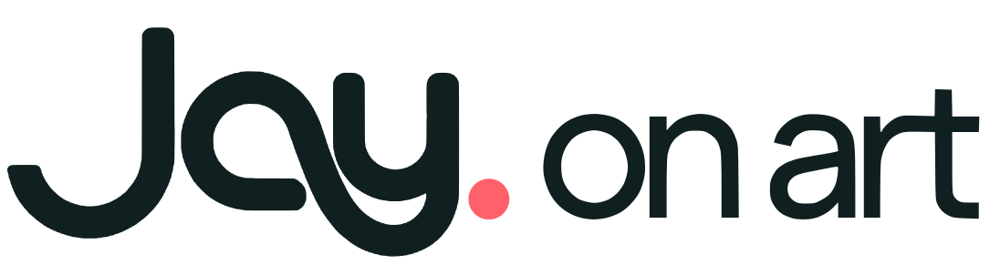
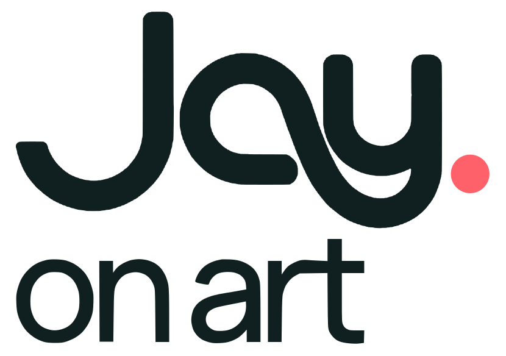

Manrope
Art. Planning.
Development.
0123456789
Aa400
Aa450
Aa500
Aa650
Aa700
영문·숫자 · 가변 굵기 400–800

글자의 크기와 굵기, 여백과 색이 만드는 읽기의 순서.
Jay on Art의 공통 디자인 기준과 현재 적용 문구를 모았습니다.
영문과 숫자는 Manrope, 한글은 Noto Sans KR을 사용합니다. 크기와 굵기로 위계를 만들고, 모든 표기는 기울임 없이 읽습니다.
Art. Planning.
Development.
0123456789
상상에서 경험으로.
서로 다른 언어를
하나의 흐름으로.
공통 글꼴 순서는 Manrope → Noto Sans KR → sans-serif입니다. 웹 폰트가 로드되지 않으면 기기의 산세리프 글꼴로 표시됩니다. 아래 650과 450은 가변 폰트의 중간 굵기입니다.
이름과 핵심 문장을 먼저, 설명을 그다음에. 큰 제목은 크기에 맞춰 조이고, 한글 본문은 −0.012em으로 미세하게 다듬습니다. 작은 영문 메타는 판독성을 위해 제한된 양의 자간을 유지합니다.
| 역할 / 토큰 | 데스크톱 | 모바일 | 굵기 · 줄높이 · 자간 |
|---|---|---|---|
첫 화면 이름--type-hero-name | 24px | 22px | 650 · 1.55 · −0.04em |
첫 화면 핵심 문장--type-hero-role | 32px | 28px | 650 · 1.55 · −0.04em |
첫 화면 설명--type-hero-description | 22px | 18px | 450 · 1.8 · −0.012em |
섹션 제목--type-display | clamp(40px, 4.4vw, 66px) | clamp(34px, 8.8vw, 46px) | 650 · 1.4 · −0.055em |
소개 문단--type-intro | 22px | 18px | 450 · 1.8 · −0.012em |
경력 회사·연도--type-company | 19px | 17px | 500 · 1.55 · −0.012em |
경력 역할--type-role | 23px | 21px | 650 · 1.55 · −0.04em |
경력 설명--type-career-body | 17px | 15px | 400 · 1.8 · −0.012em |
영문 메타--type-meta | 12px | 11px | 700 · 1.5 · +0.075em |
첫 화면과 소개, 경력의 같은 토큰을 사용한 표본입니다. 화면이 좁아지면 글자 크기와 줄바꿈이 함께 바뀝니다.

최효재
상상한 세계를, 경험할 수 있는 형태로.
아트의 의도와 기획의 구조를 기술로 구현해 하나의 경험으로 연결합니다.
AI를 활용해 아이디어를 실험하고, 제품으로 구체화하고 있습니다.
서로 다른 의견에서 필요한 단서를 찾고, 선택의 이유를 동료들과 나눕니다. 각자의 강점이 살아나면서도 하나의 결과로 이어지도록 우선순위를 정하고 제작을 이끕니다.
MORAI · 2024
디지털 트윈과 SimReady 자율주행 시뮬레이션 환경을 디렉팅했습니다.
제목과 소개 문단은 같은 잉크색을 사용합니다. 코랄 #FF616B는 로고의 점, 진행 표시와 링크 호버·초점에 사용하며 기본 텍스트 강조에는 사용하지 않습니다. 이력서의 바탕과 헤더는 순백색 #FFFFFF입니다.
#F6F1E8--paper / 기본 바탕
#182525--ink / 제목
#182525--text-strong / 주요 설명
#656565--muted / 보조 정보
#FF616B--primary / 그래픽·상호작용
홈의 왼쪽 여백을 유지하고 본문 길이를 제한합니다. 작은 화면에서는 표와 표본을 한 열로 바꿔 가로 이동 없이 읽을 수 있습니다. 홈 헤더는 한글 브랜드명을 왼쪽, 영문 워드마크를 중앙에 배치하고 Resume만 버튼 형태로 유지합니다.
--pad / --pad-left--measure-hero / --measure-intro / --measure-body--content-max--space-signature--space-section--radius-frame / --radius-focus최신 rounded 가로형과 세로형을 원래 비율로 표시합니다. 배경과 글자 안쪽은 투명하며 코랄 닷은 모든 변형에서 같은 색입니다.


홈 대표 서명: clamp(150px, 15vw, 225px), 모바일 145px. 헤더 중앙 가로형: 126px, 모바일 68px. 푸터: 가로형 135px, 모바일 세로형 66px. 한글 브랜드명은 홈과 이력서 모두 16px · 650 · 자간 −0.04em입니다. SVG의 원래 비율을 유지하고 높이는 자동으로 맞춥니다.
일반 링크는 가리키거나 키보드로 선택하면 코랄 글자와 1px 밑줄을 보여줍니다. 키보드 초점에는 별도의 잉크색 윤곽이 있어 위치를 확인할 수 있습니다.
홈은 정체성, 00은 작업 관점, 01은 작품, 02는 제품, 03은 책임의 변화, 04는 제작 방법, 05는 협업 태도를 전달합니다. 최신 적용 문구 기준: 2026.10.14.
아트의 의도와 기획의 구조를 기술로 구현해 하나의 경험으로 연결합니다.
AI를 활용해 아이디어를 실험하고, 제품으로 구체화하고 있습니다.
무엇을 보여줄지보다, 무엇을 느끼고 어떻게 움직일지를 먼저 생각합니다.
작은 디테일도 전체의 의도에 맞는지 살피며 작업합니다.
함께 제작한 상용 프로젝트와
직접 구상한 개인 작업을 모았습니다.
공간의 분위기부터 플레이의 동선까지
작업마다 다른 접근을 담았습니다.
현재 YIGO.에서 에일린을 기획·개발하고 있습니다.
의미 있는 순간을 카드로 간직하고, 장소와 취향을 통해 새로운 친구를 만나는 서비스입니다.
작업 사이에서 시작된 개인적인 탐구
배경 아티스트에서 파트 리더, 서비스 기획·개발까지.
만드는 대상과 맡는 책임을 넓혀왔습니다.
조사하고, 기준을 세우고, 만들어 확인합니다.
AI는 각 단계의 실험을 돕고, 결과는 직접 검토하며
다음 작업에 반영합니다.
함께 방향을 정하고, 끝까지 만듭니다.
서로 다른 의견에서 필요한 단서를 찾고, 선택의 이유를 동료들과 나눕니다. 각자의 강점이 살아나면서도 하나의 결과로 이어지도록 우선순위를 정하고 제작을 이끕니다.
현재 YIGO.에서 에일린을 기획·개발하고 있습니다. 일상의 작은 기억이 누군가와 관계를 맺는 계기가 될 수 있을지, 직접 만들며 답을 찾아가고 있습니다.
본문은 단어 단위로 자연스럽게 줄바꿈합니다. Discover의 보조 문구는 마침표를 붙이지 않습니다. 작품 제목과 브랜드 워드마크는 고유 표기를 유지합니다. 프로필에는 제공된 최효재 실사진을 사용하며, 이미지에는 원본 해상도 이내의 반응형 WebP를 제공합니다.